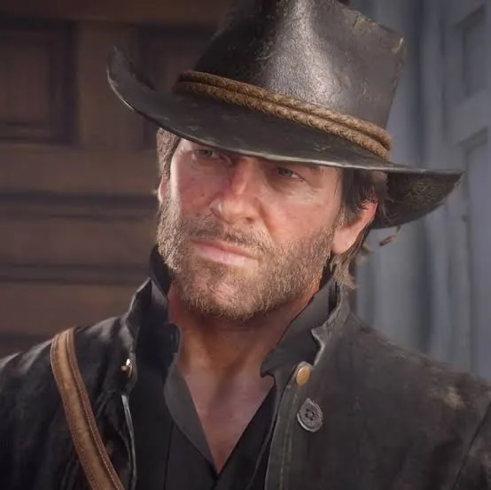
Arthur Morgan
Protagonista
Rockstar Games
América, 1899. O fim da era do velho oeste começou, e a lei caça as últimas gangues de fora da lei.
A história
Depois de um assalto fracassado na cidade de Blackwater, Arthur Morgan e a gangue Van der Linde são forçados a fugir. Com agentes federais e caçadores de recompensa em seu encalço, a gangue precisa roubar, lutar e sobreviver no coração da América.
À medida que divisões internas ameaçam separar o grupo, Arthur precisa escolher entre seus próprios ideais e a lealdade à gangue que o criou.
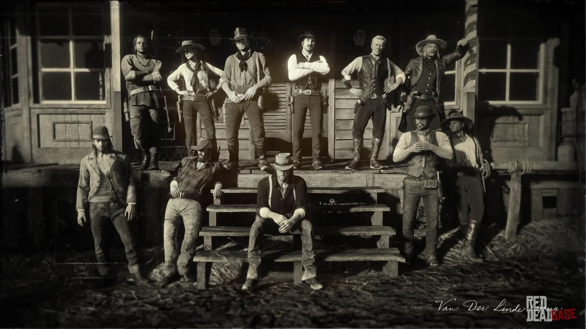
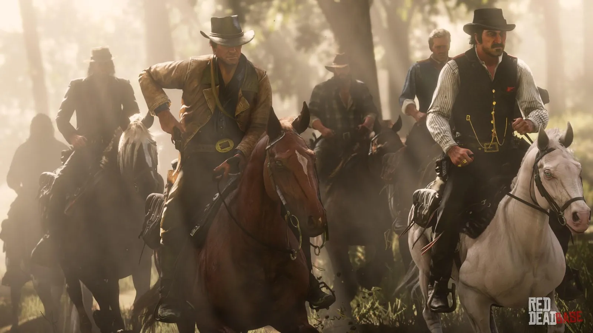
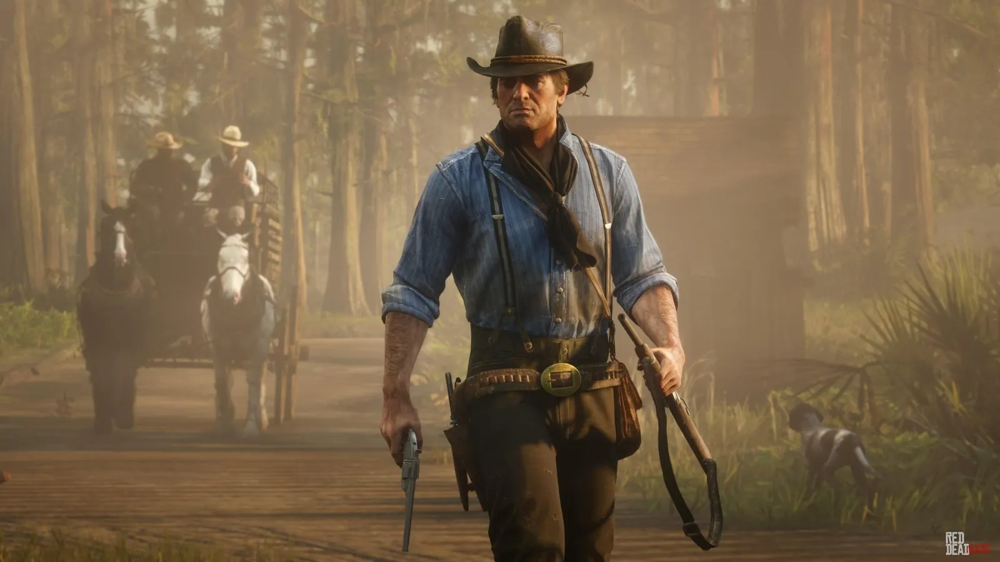
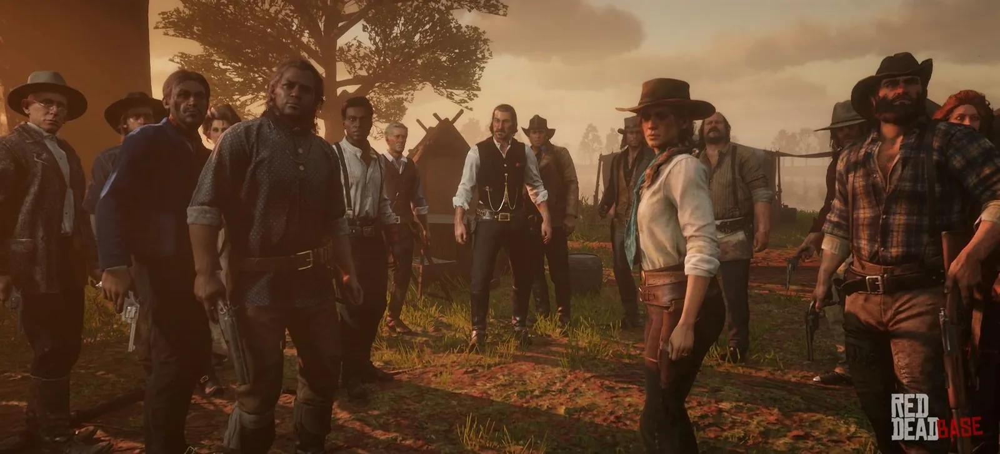
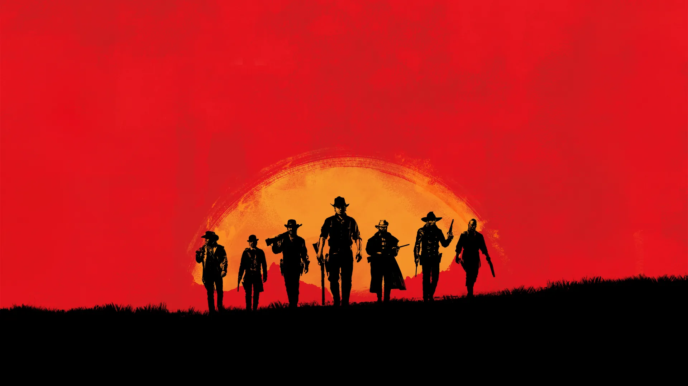
Fora da lei
Mundo aberto
Das montanhas nevadas às ruas de Saint Denis, cada canto do mapa guarda uma história para ser descoberta.
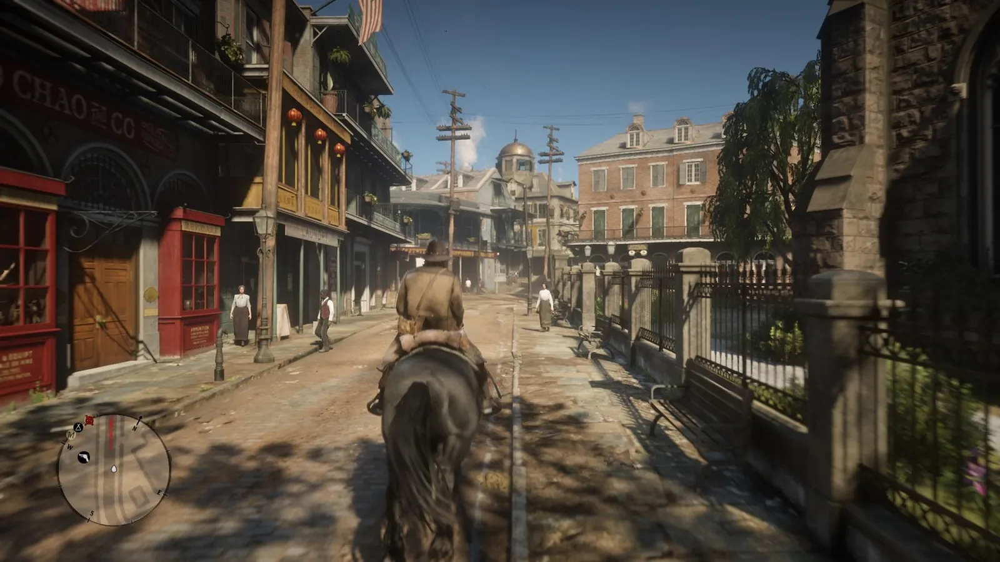
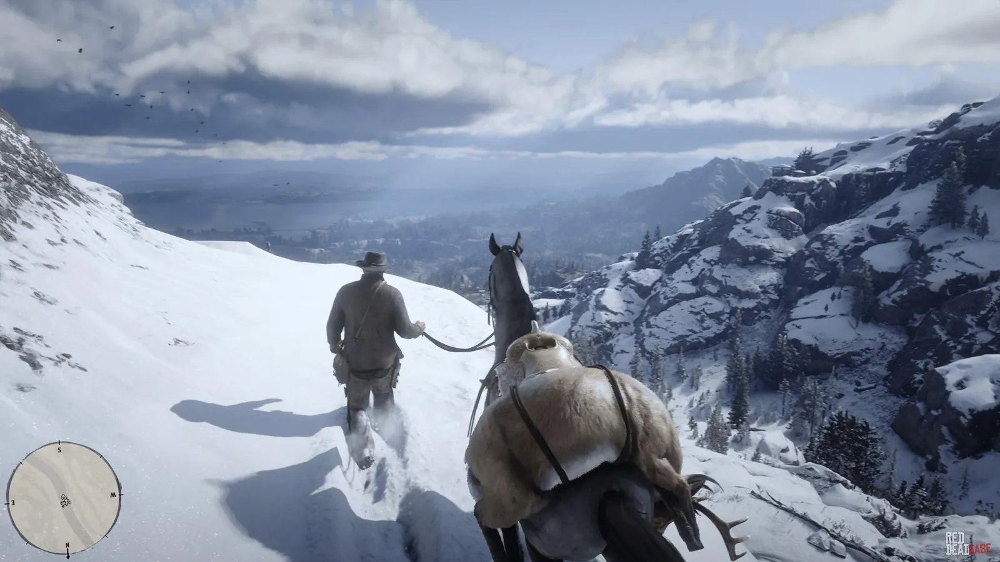
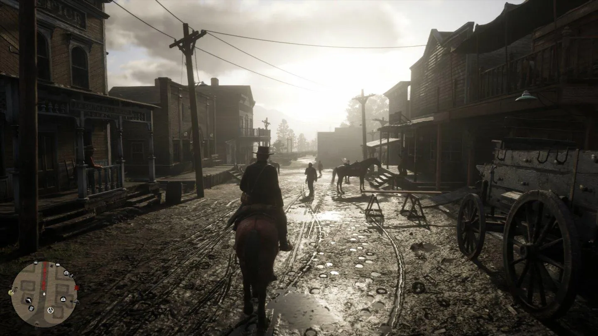
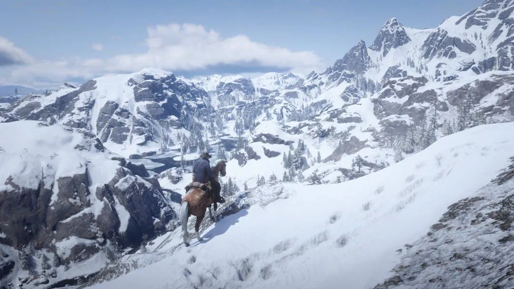
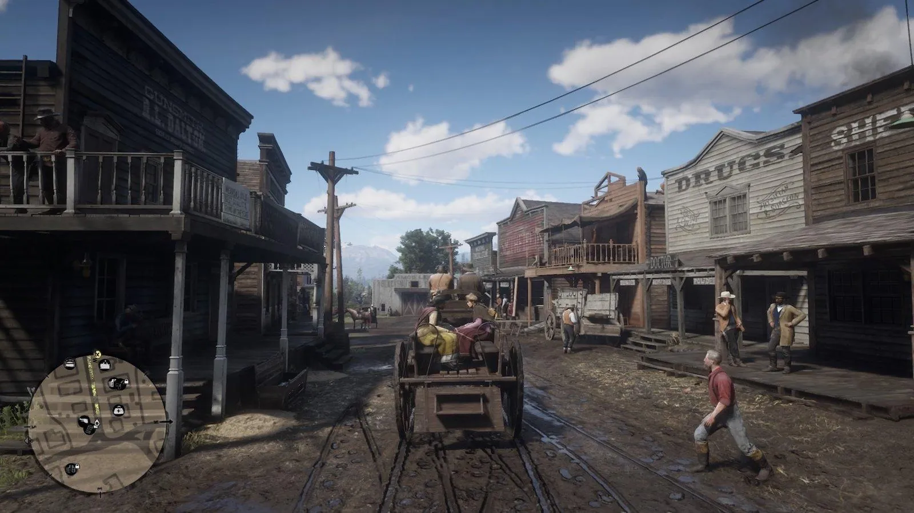
Personagens

Protagonista
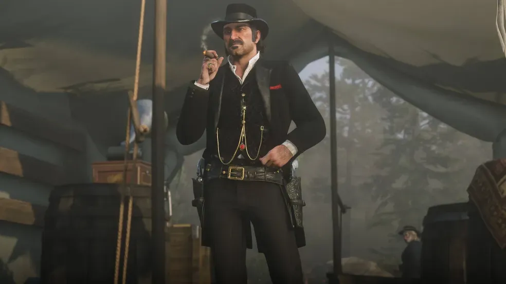
Líder da gangue
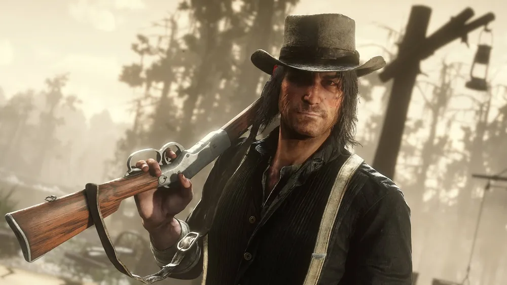
Membro da gangue